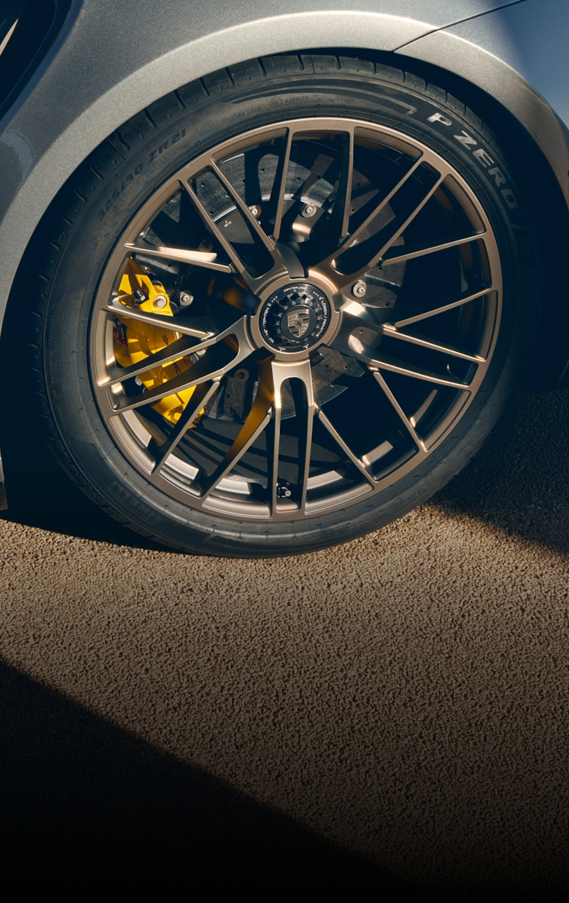

Uniek in zijn soort.
Ga naar de 911 Turbo SBrandstofverbruik gecombineerd (modelreeks): 11,7 – 11,5, CO₂-emmissies gecombineerd (model range): 266 – 262
De Macan.
De 911 Carrera T.
Taycan Turbo GT: Elektrisch energieverbruik gecombineerd (modelreeks): 21,1 – 20,4, Elektrische range gecombineerd (modelreeks): 540 – 560, CO₂-emissies gecombineerd: 0 | Macan Turbo: Elektrisch verbruik gecombineerd (WLTP): 20,7 – 18,9 kWh/100 km, Range gecombineerd (WLTP): 518 – 590 km, CO₂-emissies gecombineerd: 0 g/km | 911 Carrera T: Brandstofverbruik gecombineerd (modelreeks): 10,9 – 10,4, CO₂-emissies gecombineerd: 248 – 237
Uw Porsche reis begint nu.
-
Middenmotor 2-zits sportwagen.
Ontdek

-
4-deurs, 4/5-zits, elektrische sportwagen.
Ontdek
-
4-deurs, luxe sedan met hoog comfort.
Ontdek
-
4-deurs, 5-zits, sportieve compacte SUV.
Ontdek
-
Veelzijdige SUV met max 5 zitplaatsen.
Ontdek

Vind uw nieuwe en gebruikte Porsche bij uw Porsche Centrum.
Een Porsche is net zo individueel als zijn eigenaar. Het is altijd een uitdrukking van iemands eigen persoonlijkheid. Wij helpen u uw persoonlijke droom Porsche te vinden bij een van onze Porsche Centra.
Vind uw Porsche